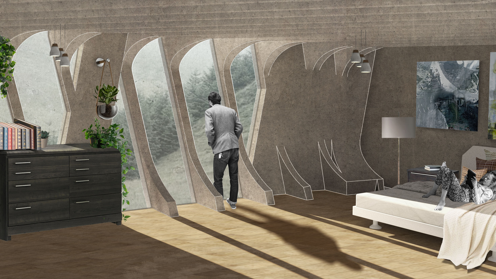
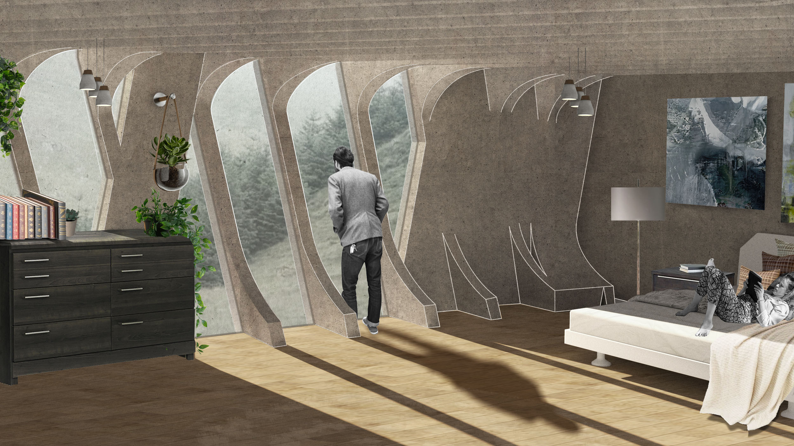

Top of Building Render.
Split House is situated within the vertical topography of Pittsburgh’s neighborhood “Hazelwood”, which is prone to frequent landslides. Along with shifting and contaminated soils, Hazelwood's primary inhabitants belong to a racially diverse, underserved, economically and socially vulnerable demographic. Split House aims to enable a better future for the children of low-socioeconomic households by stabilizing the landscape into edible playscapes.
Coming out of a research studio “Lithopic (Living Stone) House: Ecologies of Earthen Matter”, that was led in conjunction with a material science seminar, the design approach is underpinned by a potential of construction waste recycling through direct 3d binder-jet printing. This cradle-to-cradle method would reduce CO2 levels by reducing the volume of new architectural materials, as well as offsetting waste streams heading to industrial landfills. Shaping printable components for minimal material use aligned with structural and ecological potential is coupled with a desire to integrate new landscape and biomass directly into the architectural form, function and experience.
Split House is a garden embedded into a hillside. It creates a form that allows flows of mud, water, and debris to be moved through, around, and over the entire structure, capturing the sediments into a new landform. Enforced by a central split that holds a stair-ramp circulatory greenhouse, this playscape manages natural flows, as well as it acts as a shared public space for families and for the community of Hazelwood.
This spatial organization of the house proposes co-living, co-sharing, and co-parenting. Double house reduces square footage by overlapping spaces to allow for co-parenting in conjunction with urban gardening and encourages collaborative decision- and place- making.
Adequate housing is critical for determining the health and education of children. 49% of people that live in Hazelwood are families with children under the age of 18, with the median household income is $37,091. America struggles with creating "affordable housing" options because of the market pressure, causing homes to rise in price. However, by sharing space for parenting time overlaps, utilities and urban gardens could help lower the housing cost.
 
